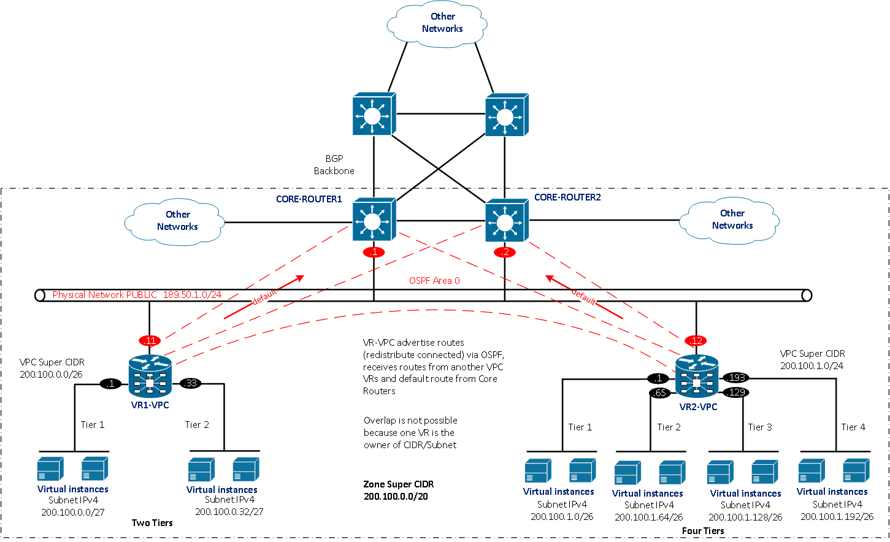
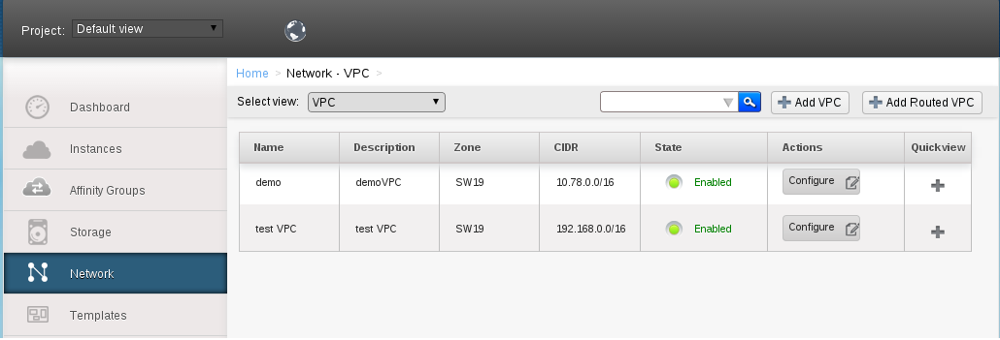
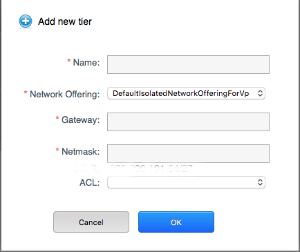
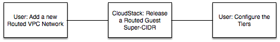

Currently, in cloudstack the inter VPC traffic has to go thru the public gateway. This means the traffic has to be nat-ed across public internet via core-routers, which is inefficient in itself. A more efficient approach will be to route the traffic within cloudstack and even better if no NAT-ing is involved.
OSPF provides a way to connect two VPCs using the optimal route between them without needing nat-ing. OSPF achieves this by maintaining and advertising the most efficient routes between various OSPF enabled routers. When a new VPC is added its OSPF enabled router advertises the routes to other routers, thereby each of them learn to route traffic properly between them.
In this implementation the focus will be on IPv4, though Quagga supports both IPv4 and IPv6 and will not be constrained when in future IPv6 support is added. The firewall, port forwarding, Network ACLs, DNS, DHCP and Password Reset services running on the router will continue to work as they do now on VPC routers.
When OSPF is selected for a zone, cloudstack will prompt for additional information in order to configure a inter VPC-Transit network on the existing public network for this zone. For simplicity we will use the existing zone wide public network as VPC-transit network. A VPC VR router sits at the boundary of the VPC tiered network in Area X. This router will advertise its routing table to the other Area X routers including the designated router. These routes are then picked up by other boundary routers. When one of the VPC's VM wants to communicate with another VPC's VM the router now knows how to direct the traffic via the VPC/Transit network(which is also the cloudstack public network).
All the VPC VR will be connected to transit network forming OSPF Area X. Cloudstack will auto generate the priorities of these routers that will help them elect a designated router.
OSPF will take care of routing the traffic originating from various tiers to another VPCs tiers. So that none of the existing functionality is affected all the other static routes will still be set on quagga based router. (An example of static routes is attached at the end of this doc)
Quagga implements OSPF (v2, v3) and is found suitable to run on debian based VPC virtual router to provide dynamic routing. Quagga is an advanced software routing package that provides a suite of TCP/IP-based routing protocols and provides implementations of OSPFv2, OSPFv3, RIP v1 and v2, RIPng and BGP-4 for Unix-like platforms, particularly FreeBSD, Linux, Solaris and NetBSD.
The public network (VPC-Transit network) will be used as transit network for OSPF for all the dynamically routed VPCs in the zone. If dynamic routing is enabled for the the zone additional information will be collected. This information will be stored in network_details table for the given public network.
Following additional information is required to enable dynamic routing for a zone:
Field Name |
Description |
|---|---|
| Protocol | Dropdown to select the protocol: OSPF or BGP |
| OSPF Area | Specify the OSPF Area ID |
| Hello Interval | Set number of seconds for HelloInterval timer value. Setting this value, Hello packet will be sent every timer value seconds on the specified interface. This value must be the same for all routers attached to a common network. The default value is 10 seconds. |
| Dead Interval | Set number of seconds for RouterDeadInterval timer value used for Wait Timer and Inactivity Timer. This value must be the same for all routers attached to a common network. The default value is 40 seconds. |
| Retransmit Interval | Set number of seconds for RxmtInterval timer value. This value is used when retransmitting Database Description and Link State Request packets. The default value is 5 seconds. |
| Transmit Delay | Set number of seconds for InfTransDelay value. LSAs’ age should be incremented by this value when transmitting. The default value is 1 seconds. |
| Authentication | Dropdown with 2 options: MD5 or Text Plain |
| Password | The password for OSPF Area |
| Super-CIDR** | For using dynamic routing a zone level super-cidr is required. This will be carved into network sub levels and into the created routed tiers. |
We need a super cidr that will be used to allocate cidrs to tiers that will be part of dynamic routing. Initial implementation will have this super-cidr available to all domains and accounts. The ip addresses will be distributed as per RFC 3531.
Lets say user enters 200.200.0.0/16, this can be split into 256 subnets using /24. Which are 200.200.0.0/24 to 200.200.255.0/24. This means a total of 256 VPCs can be created in one single zone.
Then each 200.200.100.0/24 will be further split into 8 network 200.200.100.0/27. This means that first /27 network is for VPC and the next 7 for the VPC tiers.
Initial implementation will split the Super IPv4 CIDR to /24 networks and each /24 network will be split into /27 networks. If the super IPv4 CIDR is not sufficiently big enough to split into network sub levels then appropriate errors will be given to the user.
The last ip address of the VPC level super-cidr will be used as the loopback id of the ospf enabled VPC-VR.
Some of the operators may want their users to have public IP assigned to their VPC-VMs. To facilitate that management server will allow both private and public class super-cidrs to be specified for the zone. There will be provision to add more super-CIDRs of private public kind at later stages.
The above super-cidr partitioning scheme is an example only. The selection of super-CIDR and subsequent partitioning of it is user driven. The admin is able to provide a super-cidr for the ospf enabled zone. The users then further partitions it by specifying netmast for their VPC and its tiers. As shown below:

There will be two default service offerings that will be created for dynamically routed VPCs one corresponding to public class ips and another corresponding to private class ips. These will be "DefaultPublicRoutedVPCNetworkOffering" and "DefaultPrivateRoutedVPCNetworkOffering" respectively. Depending on what offering a user chooses cloudstack will assign ips from the respective range to user's VPC or flag an error if no ips of that particular class exists.
These offerings will show up with other default network offerings. When a Routed VPC is created it will spin of the VPC-VR with pre-configured ranges and quagga service running on it. This will require that the system vm template have quagga installed on them.
Quagga will be pre-installed on the VPC-VR template and will be activated and configured if Default<Private/Public>RoutedVPCNetworkOffering network offering is used. Quagga will advertise the VPC routing table across to other VPC routers.
[ APPENDIX - Quagga configuration]
A md5 encoded password is used for inter quagga communication.
Creating Routed VPC
In the network tab when VPC is selected then UI will show a additional button to create routed VPCs as

The user while creating a VPC can select the Default<Private/Public>RoutedVPCNetworkOffering that will enforce the Super IPv4 CIDR to be in the Super IPv4 CIDR of the zone. If the user provides a netmask and the management server carves out a equivalent ip range form the zone super cidr.. An appropriate error will be given if the zone has exhausted all /24 CIDRs. [ Check netmask to cidr translation table below ]
When a VPC tier is created, the user shall configure an IPv4 CIDR and the IPv4 gateway. The tier IPv4 CIDR should be within the super IPv4 CIDR configured for its VPC. In this case it would be /27 prefix. If the user does not configure any value, Cloudstack automatically picks an unused /27 CIDR and assigns it to the VPC tier.

In general for selecting CIDRs for the VPC user will enter the netmask for his VPS and various tiers. Management server will verify the mask and will look for a available range corresponding to that mask. If a range is available MS will use that or else will flag an error.
The workflow for VPC creation will look as below:

The Routed VPC creation and configuration will be similar to the creation of a regular VPC, only that the Super CIDRs of various tiers are carved from the zone's configured Super CIDR for dynamically routed VPCs.
Following schema objects will be added to the MS schema:
network_details: The zone level dynamic routing parameters for public network will be saved in network details table.
network_offering: the table will be modified and a new field dynamic_routing will be added to it.
user_vm_details: for capturing priority of the OSPF router in order to facilitate selection of designated router.
zebra.conf (minimal)
hostname r-6-VM
password zebra
enable password zebra
!
! Interface's description.
!
interface eth1
description link to area 0
ip address 192.168.100.68/24
link-detect
!
log file /var/log/quagga/zebra.log
ospf.conf (minimal)
#
hostname r-4-VM
password zebra
!enable password please-set-at-here
!
!
interface eth1
!
router ospf
ospf router-id 192.168.100.67
redistribute connected
no passive-interface eth1
network 192.168.100.0/24 area 0
network 200.200.1.0/24 area 67
network 200.200.2.0/24 area 67
!
log file /var/log/quagga/ospfd.log
---
vtysh -c "show ip ospf neighbor"
Neighbor ID Pri State Dead Time Address Interface RXmtL RqstL DBsmL
192.168.100.68 1 Full/DR 34.090s 192.168.100.68 eth1:192.168.100.67 0 0 0
---
Sample command output:
vtysh -c "show ip ospf route"
============ OSPF network routing table ============
N 200.200.1.0/24 [10] area: 0.0.0.67
directly attached to eth2
N 200.200.2.0/24 [10] area: 0.0.0.67
directly attached to eth3
N IA 200.200.5.0/24 [20] area: 0.0.0.0
via 192.168.100.68, eth1
N IA 200.200.6.0/24 [20] area: 0.0.0.0
via 192.168.100.68, eth1
N 200.200.100.0/24 [10] area: 0.0.0.0
directly attached to eth1
============ OSPF router routing table =============
R 192.168.100.68 [10] area: 0.0.0.0, ABR, ASBR
via 192.168.100.68, eth1
============ OSPF external routing table ===========
Netmask /CIDR translation table:
Netmask Binary CIDR Notes
255.255.255.255 11111111.11111111.11111111.11111111 /32 1 useable
255.255.255.254 11111111.11111111.11111111.11111110 /31 0 useable
255.255.255.252 11111111.11111111.11111111.11111100 /30 2 useable
255.255.255.248 11111111.11111111.11111111.11111000 /29 6 useable
255.255.255.240 11111111.11111111.11111111.11110000 /28 14 useable
255.255.255.224 11111111.11111111.11111111.11100000 /27 30 useable
255.255.255.192 11111111.11111111.11111111.11000000 /26 62 useable
255.255.255.128 11111111.11111111.11111111.10000000 /25 126 useable
255.255.255.0 11111111.11111111.11111111.00000000 /24 class C
255.255.254.0 11111111.11111111.11111110.00000000 /23
255.255.252.0 11111111.11111111.11111100.00000000 /22
255.255.248.0 11111111.11111111.11111000.00000000 /21
255.255.240.0 11111111.11111111.11110000.00000000 /20
255.255.224.0 11111111.11111111.11100000.00000000 /19
255.255.192.0 11111111.11111111.11000000.00000000 /18
255.255.128.0 11111111.11111111.10000000.00000000 /17
255.255.0.0 11111111.11111111.00000000.00000000 /16 class B
255.254.0.0 11111111.11111110.00000000.00000000 /15
255.252.0.0 11111111.11111100.00000000.00000000 /14
255.248.0.0 11111111.11111000.00000000.00000000 /13
255.240.0.0 11111111.11110000.00000000.00000000 /12
255.224.0.0 11111111.11100000.00000000.00000000 /11
255.192.0.0 11111111.11000000.00000000.00000000 /10
255.128.0.0 11111111.10000000.00000000.00000000 /9
255.0.0.0 11111111.00000000.00000000.00000000 /8 class A
254.0.0.0 11111110.00000000.00000000.00000000 /7
252.0.0.0 11111100.00000000.00000000.00000000 /6
248.0.0.0 11111000.00000000.00000000.00000000 /5
240.0.0.0 11110000.00000000.00000000.00000000 /4
224.0.0.0 11100000.00000000.00000000.00000000 /3
192.0.0.0 11000000.00000000.00000000.00000000 /2
128.0.0.0 10000000.00000000.00000000.00000000 /1
0.0.0.0 00000000.00000000.00000000.00000000 /0